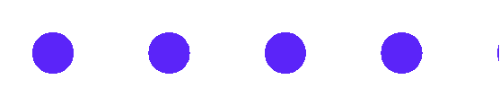

Глава 7 · Глубокое погружение в Turtle
Штампы и другие приёмы
stamp() — новая идея: отпечаток формы черепашки без движения и без линии.
Штамп — это не линия и не курсор
stamp() оставляет отпечаток текущей формы черепашки на
экране, не рисуя линию — важное отличие от обычного движения. Полезно для множества
одинаковых объектов на экране (звёзд неба, врагов в игре, отметок на графике).
shtampy.py
import turtle
screen = turtle.Screen()
screen.setup(width=460, height=200)
artist = turtle.Turtle()
artist.shape("circle")
artist.color("#5B24F9")
artist.penup()
for _ in range(6):
artist.stamp()
artist.forward(60)
screen.exitonclick()Результат выполнения

shtampy_kod.py
artist.shape("circle")
artist.color("#5B24F9")
artist.penup()
for _ in range(6):
artist.stamp()
artist.forward(60)stamp() возвращает номер — запомните его
Каждый вызов
stamp() возвращает целое число — идентификатор именно этого штампа. Без него нельзя удалить конкретный штамп позже.Удаляем конкретные штампы
clearstamp.py
import turtle
screen = turtle.Screen()
screen.setup(width=460, height=200)
artist = turtle.Turtle()
artist.shape("circle")
artist.color("#5B24F9")
artist.penup()
stamp_ids = []
for _ in range(6):
stamp_ids.append(artist.stamp())
artist.forward(60)
artist.clearstamp(stamp_ids[0])
artist.clearstamp(stamp_ids[2])
artist.clearstamp(stamp_ids[4])
screen.exitonclick()Результат выполнения
clearstamp_kod.py
stamp_ids = []
for _ in range(6):
stamp_ids.append(artist.stamp())
artist.forward(60)
artist.clearstamp(stamp_ids[0])
artist.clearstamp(stamp_ids[2])
artist.clearstamp(stamp_ids[4])| Команда | Что делает |
|---|---|
clearstamp(id) | удаляет ОДИН конкретный штамп по его номеру |
clearstamps(n) | удаляет первые n штампов (или последние n, если n отрицательное) |
clearstamps() | удаляет ВСЕ штампы черепашки |
Скрыть и показать черепашку
skryt.py
artist.hideturtle() # спрятать указатель черепашки (сама линия останется)
artist.showturtle() # показать обратноЗачем прятать черепашку?
В готовых рисунках указатель черепашки может визуально мешать.
hideturtle() в конце программы делает финальный результат чище — мы используем это во всех мини-проектах главы.Отмена последнего действия: undo()
undo.py
artist.forward(100)
artist.undo() # отменяет последнее движение, как Ctrl+ZПрактика: включает штампы и другие приёмы
Тот же ноутбук, что и в разделе «Фигуры, окружности, точки» — он охватывает и эту тему
Практика выполняется локально